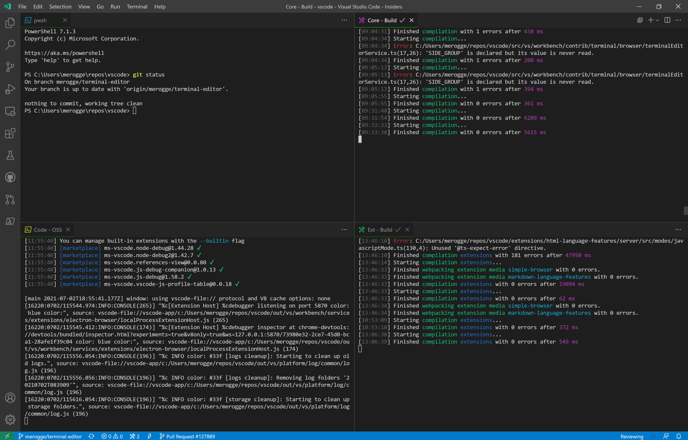

VS CODE SITE
O Visual Studio Code é um editor de código-fonte desenvolvido pela Microsoft para Windows,
Linux e macOS. Ele inclui suporte para depuração, controle de versionamento Git incorporado,
realce de sintaxe, complementação inteligente de código, snippets e
refatoração de código.
